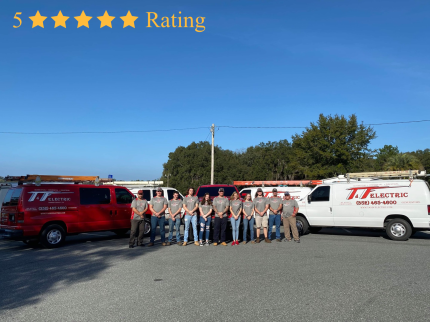

Fifty years. One family. One license number.

T&F Electric is a family business founded and operated by Ben and Wendy Tucci in Dunnellon, Florida. For over fifty years, they have wired homes, commercial buildings, and industrial facilities across Marion County. The company started small and stayed small on purpose. When you call, you get the people who do the work.
Ben holds Florida Electrical Contractor License EC13007855. The team handles everything from a single outlet replacement to a full commercial build-out. Residential, commercial, industrial. No subcontractors. No runaround. One phone number: (352) 465-4600.
Florida License EC13007855Half a century of electrical work in Dunnellon, Ocala, and Marion County. That history means fewer surprises and faster diagnostics.
Florida Electrical Contractor License EC13007855. Every job is permitted, inspected, and done to code.
Electrical emergencies do not wait for business hours. Call (352) 465-4600 any time, day or night.
Based in Dunnellon. Serving all of Marion County and surrounding areas.